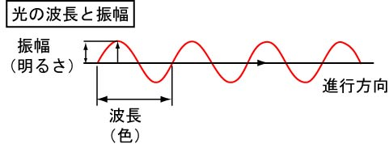
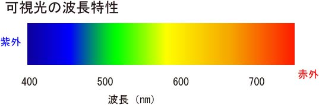
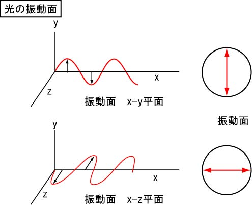
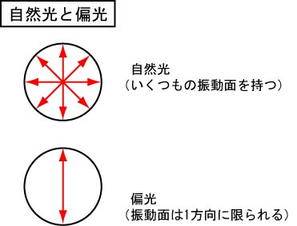
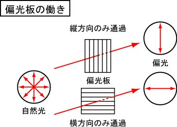

ですので，もし偏光板を二枚，直交するようにして配置すると，光は通過することができなくなってしまうのです．

さて，光の性質，について説明していきましょう．
しかし，光，というと，波の性質と粒子の性質が．．．．．なんてことにもなりませんが，ここはあくまで光学顕微鏡における光の性質についてのみ説明します．
光学顕微鏡においては，光は，”波”と考えて間違いありません．
波と考えると，その特徴には，振幅，波長，があります．

つまり，
振幅 ： 明るさ
波長 ： 色
と考えてかまいません．
我々が光の強さを感じるのが，この振幅，色を感じるのが波長なのです．
では，この波長から考えていきましょう．
・波長
波長によって，さまざまな色が発生します．

このように，さまざまな波長の光（電磁波？）がありますが，我々が見ることのできる光，可視光，は上の範囲の波長の光なのです．
大体，400ｎｍから７５０ｎｍ程度．
紫色：390～425 nm
藍色：425～445 nm
青色：445～500 nm
緑色：500～575 nm
黄色：575～585 nm
橙色：585～620 nm
赤色：620～750 nm
と書いたように，我々の感じる色はこのような波長帯にあるのです．
思ったより，微妙な変化を我々は感じることができるのですね．
400ｎｍより短い波長帯を，紫外，750ｎｍより長い波長帯を赤外，を表示します．
上記の値はあくまで目安ですので，厳密には若干違うかもしれません．．．．
・光の振動面
光は波の性質を持っていますから，その振幅には振動面があります．
光が，Ｘ方向に進む場合，Ｙ面に沿って振動する，Ｚ面に沿って振動する，を下の図に示しました．

右側の丸が光の進行方向から眺めた振動面の図です．
こうしてみた方がわかりやすいですね．
では，太陽などから来る光はどうでしょう？

太陽などから来る光，自然光，はいくつもの振動面を持っています．
それに対して，偏光，は振動面が１方向に限られている光を指します．
では，この偏光はどのようして作られるのでしょう？その一例を示します．

このようにスリットのような，偏光板，というものを通すことにより，自然光を偏光に変化させることができるのです．
ですので，もし偏光板を二枚，直交するようにして配置すると，光は通過することができなくなってしまうのです．
このことを，クロスニコル，と呼びます．
この偏光は，３Ｄの映画などでよく使われます．
あのめがねの黒いフィルムのことです．
右眼に縦，左眼に横，などのフィルムをおけば，左右それぞれ違う映像を見ることができます．
上映するフィルムに右目から見た映像と左眼から見た映像をそれぞれ偏光を掛けて上映すれば，我々は立体的に見ることができるのです．
もし，このめがねを２つ手にすることがあれば，二つのめがねを重ねて，回転させてみてください，透過したり，見えなくなったりしますよ．